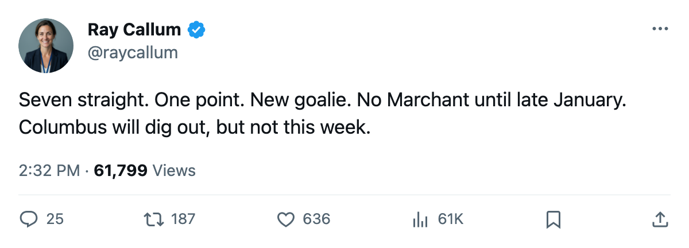
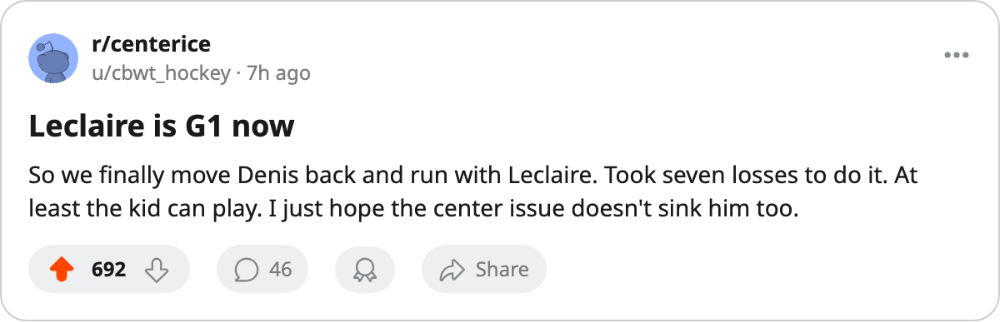

The Slide: Columbus Has Lost 7 Straight, Moved Its Goalie, and Still Earned a Point
Pascal Leclaire is the new G1 after Marc Denis started 15 of the first 22, and Todd Marchant is not back until January 30
 Ray CallumSenior correspondent · Home Ice Network
Ray CallumSenior correspondent · Home Ice Network
 Columbus Blue Jackets has lost 7 straight games and earned 1 point across that stretch. The Blue Jackets sit at 7-8-3, 25 points, 8th in the Western Conference, and on November 30
Columbus Blue Jackets has lost 7 straight games and earned 1 point across that stretch. The Blue Jackets sit at 7-8-3, 25 points, 8th in the Western Conference, and on November 30  Pascal Leclaire93 starts in goal for the first time as the designated G1.
Pascal Leclaire93 starts in goal for the first time as the designated G1.
The change came through the lineup data this week. Leclaire moved from G2 to G1,  Marc Denis92 shifted from G1 to G2, and
Marc Denis92 shifted from G1 to G2, and  Fred Brathwaite81 dropped out of the dressed group entirely. Leclaire carries 15 games played, a 68% share, across 22 team games. Denis started 15 of the first 20 before the shuffle.
Fred Brathwaite81 dropped out of the dressed group entirely. Leclaire carries 15 games played, a 68% share, across 22 team games. Denis started 15 of the first 20 before the shuffle.
The single point across 7 losses was an overtime loss. Columbus has not won since roughly November 14 and has not won in regulation since the streak began.
The personnel hole driving the losing run sits at center.  Todd Marchant84 is out until January 30 with a knee, his third injury spell of the season. The club has 18 injury designations total and 99 days lost, the 6th-highest spell count in the league. Hannes Hyvonen70 (groin) returns December 6.
Todd Marchant84 is out until January 30 with a knee, his third injury spell of the season. The club has 18 injury designations total and 99 days lost, the 6th-highest spell count in the league. Hannes Hyvonen70 (groin) returns December 6.
["I'm looking at the whole ledger and we're in it," GM Brent O'Connor told The Tunnel's Marcus Bell after the November 26 game. "We've got 25 points, we're in the middle of the Central. The streak is loud because it's right now, it's this week."]
Columbus Blue Jackets opens November 30 at home against  Carolina Hurricanes, which carries a 3-game winning streak and 26 points of its own. The Hurricanes are 6-9-2 and 6th in the Eastern Conference. Their 2-1 win over
Carolina Hurricanes, which carries a 3-game winning streak and 26 points of its own. The Hurricanes are 6-9-2 and 6th in the Eastern Conference. Their 2-1 win over  Vancouver Canucks on November 27 was their 3rd in 4 games.
Vancouver Canucks on November 27 was their 3rd in 4 games.
Columbus is 7-6 at home this season, 4-5 on the road. The Blue Jackets scored 1 goal in Saturday's 2-1 loss to  Edmonton Oilers and have been held to 2 or fewer in 5 of the 7 losses. Their goal differential across the losing streak is -4.
Edmonton Oilers and have been held to 2 or fewer in 5 of the 7 losses. Their goal differential across the losing streak is -4.
Columbus Blue Jackets faces Carolina Hurricanes again in Columbus on November 30, then visits  Detroit Red Wings and
Detroit Red Wings and  Chicago Blackhawks this week before hosting
Chicago Blackhawks this week before hosting  St. Louis Blues on December 6. The Marchant timeline means the Blue Jackets navigate the first 8 games of December without their second-best center.
St. Louis Blues on December 6. The Marchant timeline means the Blue Jackets navigate the first 8 games of December without their second-best center.

